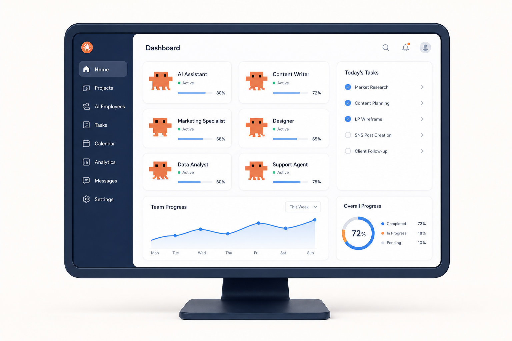
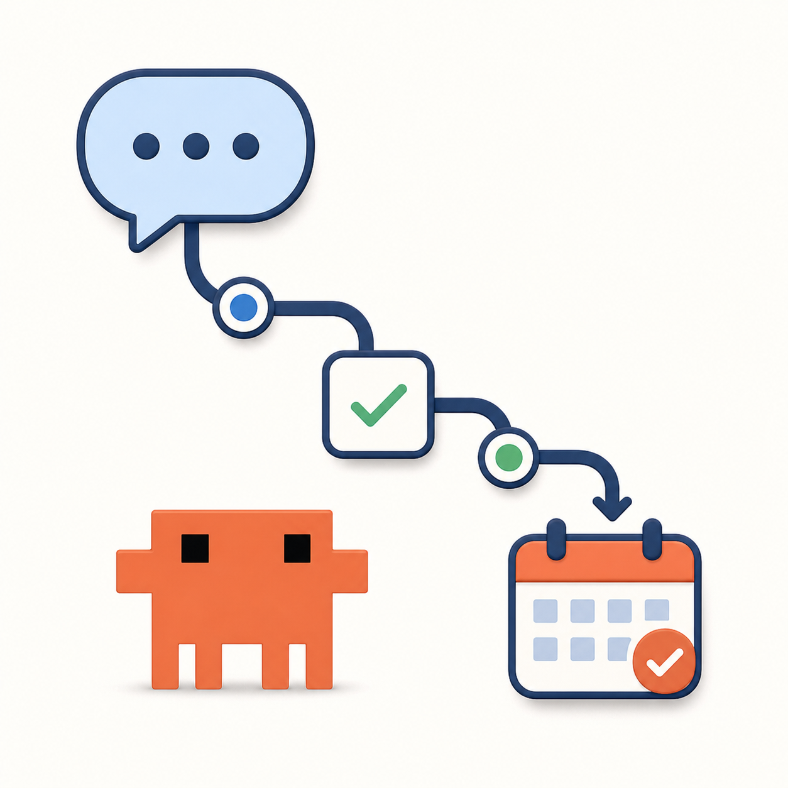

商品アイデアがまとまらない
経験や知識はあるのに、何をどう商品にすればいいかわからない。
Claude Code実践研修
商品設計、LP制作、SNS発信、相談導線まで。AIを学ぶだけで終わらせず、あなたのビジネスを形にする実践型プログラムです。
無料相談でAI社員の作り方を聞く無理な勧誘はありません。まずは今の状況整理だけでも大丈夫です。

経験や知識はあるのに、何をどう商品にすればいいかわからない。
デザインや文章が苦手で、時間ばかりかかって形にならない。
AIで作ったものが集客や販売につながらず、成果が出ない。

問い合わせや相談から成約までの流れを作れずに迷っている。
あなたの経験を整理し、売れる商品に変え、LPとSNSと相談導線までつなげます。順番に進めるので、AI初心者でも迷わず取り組めます。
あなたの経験を「売れる商品」に設計できます。
成約につながるLPを自分で作れるようになります。
価値が伝わる投稿案をAI社員と一緒に作れます。
タスク整理や文章作成を支えるAI秘書を作ります。
相談から成約までの流れを設計できます。
AI社員と相談しながら、事業づくりを前に進められます。
経験・強み・価値を言語化します。
タスク管理を支えるAI社員を作ります。
ターゲットと商品コンセプトを設計します。
成約につながるLP構成とデザインを作ります。
発信の型を作り、継続的に投稿します。
LINEやフォームで相談・予約の流れを作ります。
複数のAI社員で回る仕組みにします。
LP、提案書、企画書などすぐに使える型をプレゼント。
Claude Code用プロンプトを多数収録。
進捗を可視化しながら迷わず進められます。
期間中に個別相談で課題を解決します。
コーチ
商品設計からLP、LINE導線まで一気に整い、初めてのセッション予約につながりました。
一人起業家
SNS発信が苦手でしたが、AIライターと一緒に進められて、相談までの流れが見えました。
インストラクター
一人で悩んでいたところから卒業。AI社員チームがある安心感で、自分らしいビジネスを形にできました。
大丈夫です。AIやClaude Codeに慣れていない方でも、順番に進められるように設計しています。
参加できます。強みの棚卸しから商品設計まで行うため、商品が固まっていない方にも向いています。
問題ありません。難しい専門用語よりも、仕事にどう使うかを中心に進めます。
短時間でも進められる課題形式です。必要なところから優先順位をつけて取り組めます。